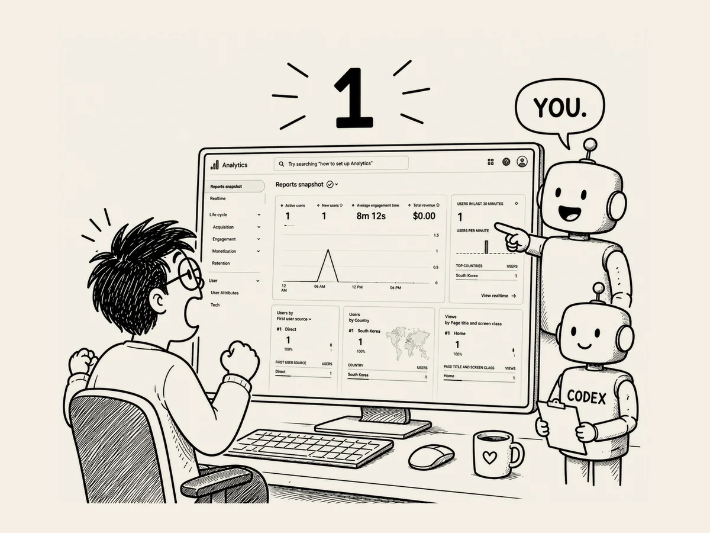

24.
Aktive Nutzer: 1. Endlich ist jemand gekommen!
Ich dachte,
wenn die Website erst einmal fertig ist,
wäre alles erledigt.
War es nicht.
GA4 wartete schon auf mich.
Google Analytics 4.
Anscheinend ist das ein Dienst,
der einem zeigt,
wie viele Menschen die Website besucht haben,
wann sie gekommen sind
und woher.
Als ich den Bildschirm
zum ersten Mal sah,
war ich beeindruckt.
Wow.
So etwas gibt es auch?
Mit Grafiken und Zahlen
zeigte mir GA4,
wie viele Menschen
meine Website besucht hatten,
aus welchen Ländern sie kamen,
welche Seiten sie angesehen hatten
und noch einiges mehr.
Beeindruckend.
Aber nachdem ich eine Weile
auf den Bildschirm geschaut hatte,
wurde mir langsam schwindelig.
So viele Menüs.
So viele Zahlen.
So viele Grafiken.
Allein das alles zu verstehen,
würde wahrscheinlich
eine Menge Zeit und Mühe kosten.
Inzwischen wusste ich,
was zu tun war.
Ich machte einen Screenshot.
Und zeigte ihn der KI.
„Was ist das?
Was soll ich damit machen?“
Die KI begann zu erklären.
„Das ist die Berichtsübersicht von GA4.
Hier können Sie sehen,
wie viele aktive Nutzer es gibt,
aus welchen Ländern sie kommen,
über welche Wege sie auf Ihre Website gelangt sind,
welche Seiten sie angesehen haben ...“
Lang.
Ich verstand nicht wirklich,
was sie mir da erklärte.
Also fragte ich noch einmal.
„Kurz gesagt:
Es funktioniert richtig?“
„Ja.
Es ist korrekt verbunden
und funktioniert.“
Gut.
Das reichte mir.
„Muss ich das jetzt
ständig beobachten?“
„Nein.
Die Website ist gerade erst online gegangen,
deshalb gibt es noch kaum Daten.
Sie können in ein paar Tagen
wieder nachsehen.“
Verstanden.
Aber am nächsten Tag
schaute ich trotzdem wieder nach.
Irgendetwas sah anders aus.
Da stand eine Zahl.
Aktive Nutzer: 1.
Hm?
Jemand war da.
War endlich jemand
auf meiner Website gewesen?
Schnell machte ich einen Screenshot.
Und zeigte ihn der KI.
„Schau mal.
War jemand auf meiner Website?“
Die KI sah sich
den Bildschirm an.
Dann sagte sie:
„Sehr wahrscheinlich
ist das Ihr eigener Besuch.“
Ah.
Ich war das.
Ich hatte meinen eigenen Schatten gesehen
und mich selbst erschreckt.
